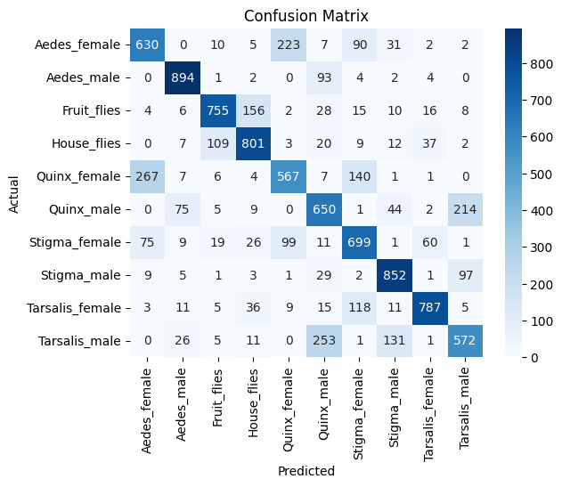

Modeling#
from sklearn.ensemble import RandomForestClassifier
from sklearn.metrics import accuracy_score, classification_report, confusion_matrix
import pandas as pd
from scipy.io import arff
from sklearn.pipeline import Pipeline
from sklearn.decomposition import PCA
from sklearn.preprocessing import StandardScaler
from sklearn.model_selection import RandomizedSearchCV, train_test_split, GridSearchCV
from scipy.stats import randint
from scipy.fft import fft, fftfreq
import numpy as np
import librosa
data, meta = arff.loadarff('./InsectSound/InsectSound.arff')
df = pd.DataFrame(data)
df['target'] = df['target'].str.decode('utf-8')
def truncate_fft(audio_signal, sampling_rate=6000):
freqs = fft(len(audio_signal), 1/sampling_rate)
mask = (freqs >= 100) & (freqs <= 2000)
freq_spectrum = freq_spectrum = np.fft.fft(audio_signal)
truncated_spectrum = freq_spectrum[mask]
return truncated_spectrum
def truncate_fft(signal):
fft_freq = fftfreq(len(signal), d=1/6000)
fft_values = np.abs(fft(signal))
mask = (fft_freq >= 100) & (fft_freq <= 2000)
truncated_fft = fft_values
return truncated_fft
def truncate(signals):
fft_arr = []
for signal in signals.itertuples():
truncated_signal = truncate_fft(signal[1:])
fft_arr.append(truncated_signal)
fft_df = pd.DataFrame(fft_arr)
return fft_df
def getFFTFeatures(df):
fft_df = truncate(df.drop('target', axis=1))
fft_df['target'] = df['target'].values
return fft_df
Best params: {‘pca__n_components’: 100, ‘rf__class_weight’: ‘balanced’, ‘rf__max_depth’: None, ‘rf__max_features’: ‘log2’, ‘rf__min_samples_leaf’: 2, ‘rf__min_samples_split’: 9, ‘rf__n_estimators’: 400}
import numpy as np
from scipy.stats import skew, kurtosis
from sympy import ff
def extract_time_features(signal):
return [
np.mean(signal),
np.std(signal),
np.max(signal),
np.min(signal),
skew(signal),
kurtosis(signal),
np.sqrt(np.mean(signal**2)) # RMS
]
def extract_mfcc(signal, sr=6000): # sr sesuaikan dengan sampling rate data kamu
# Ekstrak 13 koefisien MFCC (standar industri)
mfccs = librosa.feature.mfcc(y=signal, sr=sr, n_mfcc=13)
# Ambil rata-ratanya agar menjadi 1D array per sampel
return np.mean(mfccs.T, axis=0)
fft_feature = pd.DataFrame(np.abs(fft(df.drop('target', axis=1))), columns=[f'fft_{i}' for i in range(df.shape[1]-1)])
fft_feature
| fft_0 | fft_1 | fft_2 | fft_3 | fft_4 | fft_5 | fft_6 | fft_7 | fft_8 | fft_9 | ... | fft_590 | fft_591 | fft_592 | fft_593 | fft_594 | fft_595 | fft_596 | fft_597 | fft_598 | fft_599 | |
|---|---|---|---|---|---|---|---|---|---|---|---|---|---|---|---|---|---|---|---|---|---|
| 0 | 0.001266 | 0.001481 | 0.001590 | 0.002030 | 0.003009 | 0.004896 | 0.011060 | 0.030482 | 0.020946 | 0.143084 | ... | 0.227966 | 0.143084 | 0.020946 | 0.030482 | 0.011060 | 0.004896 | 0.003009 | 0.002030 | 0.001590 | 0.001481 |
| 1 | 0.091325 | 1.663727 | 2.516106 | 2.680224 | 1.956787 | 0.827690 | 0.610849 | 0.228383 | 0.166626 | 0.207593 | ... | 0.139338 | 0.207593 | 0.166626 | 0.228383 | 0.610849 | 0.827690 | 1.956787 | 2.680224 | 2.516106 | 1.663727 |
| 2 | 1.460694 | 4.026402 | 6.681847 | 5.384346 | 3.661780 | 5.095389 | 4.347388 | 2.546683 | 2.265843 | 1.140582 | ... | 0.788168 | 1.140582 | 2.265843 | 2.546683 | 4.347388 | 5.095389 | 3.661780 | 5.384346 | 6.681847 | 4.026402 |
| 3 | 2.278270 | 3.279660 | 4.604232 | 5.817501 | 6.212055 | 5.468330 | 4.091834 | 2.900797 | 2.261878 | 1.780031 | ... | 1.188322 | 1.780031 | 2.261878 | 2.900797 | 4.091834 | 5.468330 | 6.212055 | 5.817501 | 4.604232 | 3.279660 |
| 4 | 0.626172 | 1.206869 | 1.819648 | 4.445877 | 1.071372 | 4.059844 | 3.649719 | 0.369076 | 2.585278 | 2.302830 | ... | 0.546604 | 2.302830 | 2.585278 | 0.369076 | 3.649719 | 4.059844 | 1.071372 | 4.445877 | 1.819648 | 1.206869 |
| ... | ... | ... | ... | ... | ... | ... | ... | ... | ... | ... | ... | ... | ... | ... | ... | ... | ... | ... | ... | ... | ... |
| 49995 | 2.359625 | 2.738969 | 2.227953 | 5.612001 | 4.887800 | 7.069485 | 5.069708 | 4.089418 | 2.879523 | 2.683489 | ... | 1.622403 | 2.683489 | 2.879523 | 4.089418 | 5.069708 | 7.069485 | 4.887800 | 5.612001 | 2.227953 | 2.738969 |
| 49996 | 0.519516 | 3.914984 | 8.145416 | 7.378763 | 6.682145 | 6.727825 | 4.843223 | 2.833997 | 2.523464 | 1.585710 | ... | 2.116535 | 1.585710 | 2.523464 | 2.833997 | 4.843223 | 6.727825 | 6.682145 | 7.378763 | 8.145416 | 3.914984 |
| 49997 | 0.286586 | 2.001550 | 2.445273 | 3.810411 | 9.245578 | 5.539218 | 2.689168 | 3.433499 | 1.655737 | 0.436506 | ... | 0.372890 | 0.436506 | 1.655737 | 3.433499 | 2.689168 | 5.539218 | 9.245578 | 3.810411 | 2.445273 | 2.001550 |
| 49998 | 0.280659 | 0.673674 | 1.273318 | 2.141066 | 3.404932 | 2.454868 | 2.586840 | 2.810489 | 0.879021 | 1.301997 | ... | 2.483018 | 1.301997 | 0.879021 | 2.810489 | 2.586840 | 2.454868 | 3.404932 | 2.141066 | 1.273318 | 0.673674 |
| 49999 | 1.044936 | 1.502167 | 3.160499 | 4.751461 | 6.672225 | 4.399676 | 2.645032 | 4.715157 | 4.058160 | 2.017074 | ... | 2.184495 | 2.017074 | 4.058160 | 4.715157 | 2.645032 | 4.399676 | 6.672225 | 4.751461 | 3.160499 | 1.502167 |
50000 rows × 600 columns
time_domain_features = df.drop('target', axis=1).apply(extract_time_features, axis=1, result_type='expand')
time_domain_features.columns = ['mean', 'std', 'max', 'min', 'skew', 'kurtosis', 'rms']
time_domain_features
| mean | std | max | min | skew | kurtosis | rms | |
|---|---|---|---|---|---|---|---|
| 0 | -0.000002 | 0.073110 | 0.345170 | -0.462607 | -0.717058 | 10.633132 | 0.073110 |
| 1 | 0.000152 | 0.091712 | 0.335604 | -0.448076 | -0.502626 | 4.108380 | 0.091712 |
| 2 | -0.002434 | 0.071334 | 0.469603 | -0.206496 | 3.189380 | 17.501170 | 0.071375 |
| 3 | -0.003797 | 0.082611 | 0.495580 | -0.434625 | -0.105349 | 11.459422 | 0.082698 |
| 4 | -0.001044 | 0.087792 | 0.466737 | -0.217916 | 1.979427 | 8.145589 | 0.087798 |
| ... | ... | ... | ... | ... | ... | ... | ... |
| 49995 | 0.003933 | 0.068933 | 0.490601 | -0.286594 | 1.435683 | 13.274223 | 0.069045 |
| 49996 | -0.000866 | 0.089605 | 0.353256 | -0.479459 | -1.772936 | 9.893690 | 0.089609 |
| 49997 | -0.000478 | 0.047818 | 0.114342 | -0.192841 | -1.121479 | 2.536456 | 0.047820 |
| 49998 | 0.000468 | 0.033227 | 0.131041 | -0.165053 | -1.136498 | 6.838631 | 0.033231 |
| 49999 | -0.001742 | 0.087718 | 0.502781 | -0.271609 | 1.036000 | 7.933021 | 0.087735 |
50000 rows × 7 columns
X = pd.concat([fft_feature, time_domain_features], axis=1)
Y = df['target']
X_train, X_test, y_train, y_test = train_test_split(X, Y, test_size=0.2, random_state=42, stratify=Y)
pipeline = Pipeline([
('scaler', StandardScaler()),
('classifier', RandomForestClassifier(random_state=42))
])
pipeline.fit(X_train, y_train)
Pipeline(steps=[('scaler', StandardScaler()),
('classifier', RandomForestClassifier(random_state=42))])In a Jupyter environment, please rerun this cell to show the HTML representation or trust the notebook. On GitHub, the HTML representation is unable to render, please try loading this page with nbviewer.org.
Pipeline(steps=[('scaler', StandardScaler()),
('classifier', RandomForestClassifier(random_state=42))])StandardScaler()
RandomForestClassifier(random_state=42)
y_pred = pipeline.predict(X_test)
print(classification_report(y_test, y_pred))
precision recall f1-score support
Aedes_female 0.64 0.63 0.63 1000
Aedes_male 0.86 0.89 0.88 1000
Fruit_flies 0.82 0.76 0.79 1000
House_flies 0.76 0.80 0.78 1000
Quinx_female 0.63 0.57 0.60 1000
Quinx_male 0.58 0.65 0.62 1000
Stigma_female 0.65 0.70 0.67 1000
Stigma_male 0.78 0.85 0.81 1000
Tarsalis_female 0.86 0.79 0.82 1000
Tarsalis_male 0.63 0.57 0.60 1000
accuracy 0.72 10000
macro avg 0.72 0.72 0.72 10000
weighted avg 0.72 0.72 0.72 10000
import seaborn as sns
import matplotlib.pyplot as plt
sns.heatmap(confusion_matrix(y_test, y_pred), annot=True, fmt='d', cmap='Blues', xticklabels=pipeline.classes_, yticklabels=pipeline.classes_)
plt.xlabel('Predicted')
plt.ylabel('Actual')
plt.title('Confusion Matrix')
plt.show()
